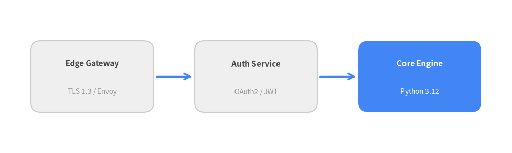

![Open In Colab]()
01. Drawlib on Jupyter & Google Colab
Welcome to the interactive Drawlib Hands-on Notebook series! Drawlib unifies narrative Markdown, architecture diagrams, and executable Python cells into a single source of truth (type = "jupyter").

View Drawlib Python Code
from drawlib.canvas import save, setup
from drawlib.icons import phosphor
from drawlib.lines import line
from drawlib.shapes import rectangle
from drawlib.styles import Styles
from drawlib.text import text
setup(width=100, height=34)
text(
(50, 30),
"Illustrated Notebook as Code: From Markdown to Colab & HTML",
style=Styles.PrimaryBold.patch(text_size=13),
)
# Stage 1: Markdown Source
rectangle((18, 15), width=24, height=16, style=Styles.Neutral.patch(shape_r=2.0))
phosphor.file_md((18, 19), width=4.5, style=Styles.Primary)
text((18, 13.5), "Markdown Source", style=Styles.DarkBold.patch(text_size=11))
text((18, 9.8), "drawlib + python fences", style=Styles.Muted.patch(text_size=10))
# Stage 2: Drawlib Builder + Dry-Run
rectangle((50, 15), width=24, height=16, style=Styles.PrimaryFlat.patch(shape_r=2.0))
phosphor.gear_six((50, 19), width=4.5, style=Styles.White)
text((50, 13.5), "build jupyter", style=Styles.WhiteBold.patch(text_size=11))
text((50, 9.8), "Dry-Run & Plot Capture", style=Styles.White.patch(text_size=10))
# Stage 3: Dual Output
rectangle((82, 15), width=24, height=16, style=Styles.PrimaryNeutral.patch(shape_r=2.0))
phosphor.browsers((82, 19), width=4.5, style=Styles.Primary)
text((82, 13.5), ".ipynb + HTML", style=Styles.PrimaryBold.patch(text_size=11))
text((82, 9.8), "Google Colab Ready", style=Styles.Dark.patch(text_size=10))
line((30.5, 15), (37.5, 15), arrow_head="->", style=Styles.PrimaryBold)
line((62.5, 15), (69.5, 15), arrow_head="->", style=Styles.PrimaryBold)
save()
!pip install -q drawlib
1. Deterministic Path Resolution with setup(..., cwd=True)
In standalone .py scripts, Drawlib resolves relative file paths (save(), image(), Dimage()) relative to the script's directory. Inside JupyterLab, Google Colab, or in-process dry-runs, there is no physical .py file on disk—so pass cwd=True to setup() to anchor all relative paths deterministically to os.getcwd():
import os
from drawlib.canvas import clear, setup
setup(width=100, height=30, cwd=True)
print(f"Canvas initialized in working directory: {os.path.basename(os.getcwd())}")
clear()
Canvas initialized in working directory: jupyter
2. Live Interactive Drawing with show()
Variables defined in one code cell persist across subsequent cells in the notebook. Let's define service metrics in Python and render our first live diagram inline using show():
services = [
("Edge Gateway", "TLS 1.3 / Envoy", 18.0),
("Auth Service", "OAuth2 / JWT", 50.0),
("Core Engine", "Python 3.12", 82.0),
]
print(f"Loaded {len(services)} architecture nodes for inline rendering.")
services[-1]
Loaded 3 architecture nodes for inline rendering.
('Core Engine', 'Python 3.12', 82.0)
Now let's render those nodes on a Drawlib canvas directly inside the notebook cell:
from drawlib.canvas import show, setup
from drawlib.lines import line
from drawlib.shapes import rectangle
from drawlib.styles import Styles
from drawlib.text import text
setup(width=100, height=30, cwd=True)
for idx, (name, stack, cx) in enumerate(services):
box_style = Styles.PrimaryFlat if idx == 2 else Styles.Neutral
title_style = Styles.WhiteBold if idx == 2 else Styles.DarkBold
sub_style = Styles.White if idx == 2 else Styles.Muted
rectangle((cx, 15), width=24, height=14, style=box_style.patch(shape_r=2.0))
text((cx, 17.5), name, style=title_style.patch(text_size=11))
text((cx, 12.0), stack, style=sub_style.patch(text_size=10))
line((30.5, 15), (37.5, 15), arrow_head="->", style=Styles.PrimaryBold)
line((62.5, 15), (69.5, 15), arrow_head="->", style=Styles.PrimaryBold)
show()
